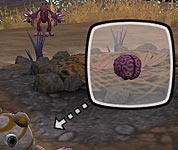
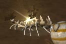
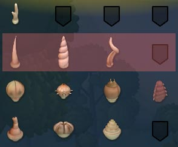
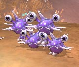
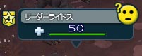
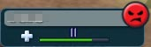
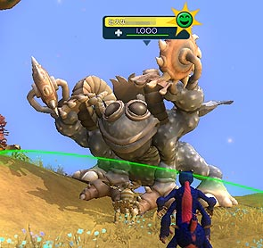
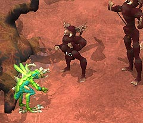

目次 > ゲームについて > シミュレーション攻略 > SPORE > ステージ攻略 > クリーチャーステージ
| 概要 | 情報 | ステージ攻略 |
| コレクション一覧 | 継承アビリティー一覧 | アチーブメント一覧 |
| SPORE 攻略へ | 目次へ戻る |
| [ 細胞ステージ ] [ クリーチャーステージ ] [ 集落ステージ ] [ 文明ステージ ] [ 宇宙ステージ ] |
| 目的 |
| DNA ポイントをためて、脳みそを知的生物レベルまで成長させてください。脳みそを成長させるためには、他のクリーチャーを食べたり、他のクリーチャーと仲良くなったりする必要があります。  |
| 入手パーツについて |
| 骨を調べたり、他のクリーチャーと仲良くしたり(感心させる)、食べたりすることでパーツを入手できます。特にリーダーのクリーチャーと仲良くしたり、食べたりすると必ず入手できるようです。 パーツは、自分がつけている系統(行単位)のものが優先して入手できるようです。  そして、その系統のものがすべて埋まると他の系統のパーツが入手できます。そのため、すぐに特定のパーツが欲しい場合は、嫌でも同系統のレベルの低いパーツを付けることで入手確率を上げてみるといいでしょう。  また、口のパーツは、肉食なら肉食のみ、草食なら草食のみ、雑食なら雑食のみしか入手できません。そのため、肉食もしくは草食のクリーチャーで、どうしても雑食になりたい場合は、上陸する前に肉食なら草食用の口を、草食なら肉食用の口を付けておくと、擬似的な雑食になれます。しかし、入手できる口のパーツは本来の食性によります。  |
| 群れの規模 |
| リーダーのクリーチャーをクリックすると、下の画像のように表示されます。  そして、名前の左側にある星の中に表示された数字がその種族のリーダーの数です。基本的に、リーダーの数が多い種族ほど、体力も能力も高いです。 |
| 仲良くする(味方にする) |
| 仲良くする(味方にする)場合は、相手のクリーチャーが提示したものと同じ行動を取り、社交バーを全部埋めなければいけません。 (社交バー) 社交バーを埋めるには、相手と同じ行動をするのが基本ですが、あえて相手の行動とは違っていても、相手よりも勝っている行動を取ることにより、正攻法では感心させられないクリーチャーを感心させることが可能です。 また、敵対した状態、つまり怒ったマーク(赤い顔)のクリーチャーは何をやっても仲良くできないので、戦うか逃げるかして対処してください。 同様に「壮大な○○」という名前のクリーチャーも、仲良しの関係になれます。「壮大な○○」のクリーチャーは通常、敵対した状態(怒ったマーク)で登場しますが、そのクリーチャーと同じものが普通の大きさでも登場する場合は、普通の大きさのクリーチャーと同じ関係となるため、下の画像のように仲良しにはなれるみたいです。   これは忍耐のいる方法ですが、自分が操作する以外のクリーチャーは、他の種族のクリーチャーが近づいてくると、後ろに下がる傾向があります。 そのため、これを利用し特定のクリーチャーを群れから孤立させ、1対複数匹で相手をし、本来なら感心させられないクリーチャーを感心させることもできます。  |
| 群れを作る |
| 自分と同じ種類のクリーチャー(同じ名前というだけでなく、同じ段階まで進化したクリーチャー)、もしくは味方のクリーチャーとは、群れを作りともに行動することができます。 他のクリーチャーを群れの中に入れるには、まず、味方のクリーチャーに「社交スタンス」の状態で話しかけます。すると、社交バーが出て、話しかけられたクリーチャーが何かしらの行動をするので、それと同じ行動を取ってください。 仲良くする場合と同じように、社交バーが一杯になると、ともに行動してくれるようになります。 ただし、「壮大な○○」というクリーチャーは仲良しの状態であっても、群れに入れることはできません。 また、クリーチャーステージから集落ステージへ移る際に、自分とは違うクリーチャーが群れの中にいると、そのクリーチャーは集落のペットとして集落ステージに登場します。あの日、共に野山を駆けめぐり、共に戦ったのを思い返すとちょっと寂しくなりますが。 |
| [ 細胞ステージ ] [ クリーチャーステージ ] [ 集落ステージ ] [ 文明ステージ ] [ 宇宙ステージ ] |
| 概要 | 情報 | ステージ攻略 |
| コレクション一覧 | 継承アビリティー一覧 | アチーブメント一覧 |
| ページの上部へ | SPORE 攻略へ | 目次へ戻る |